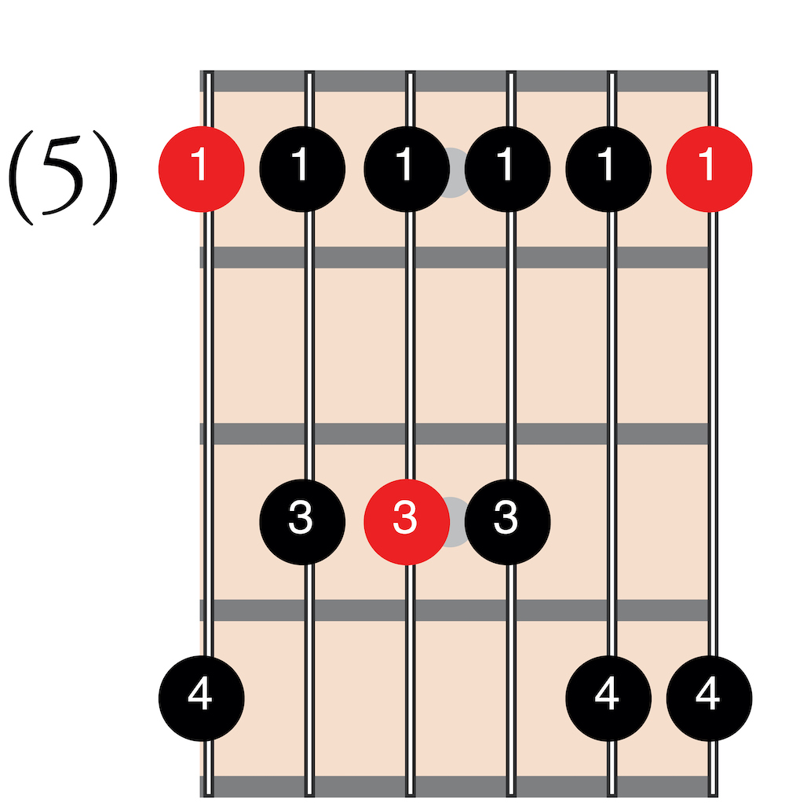
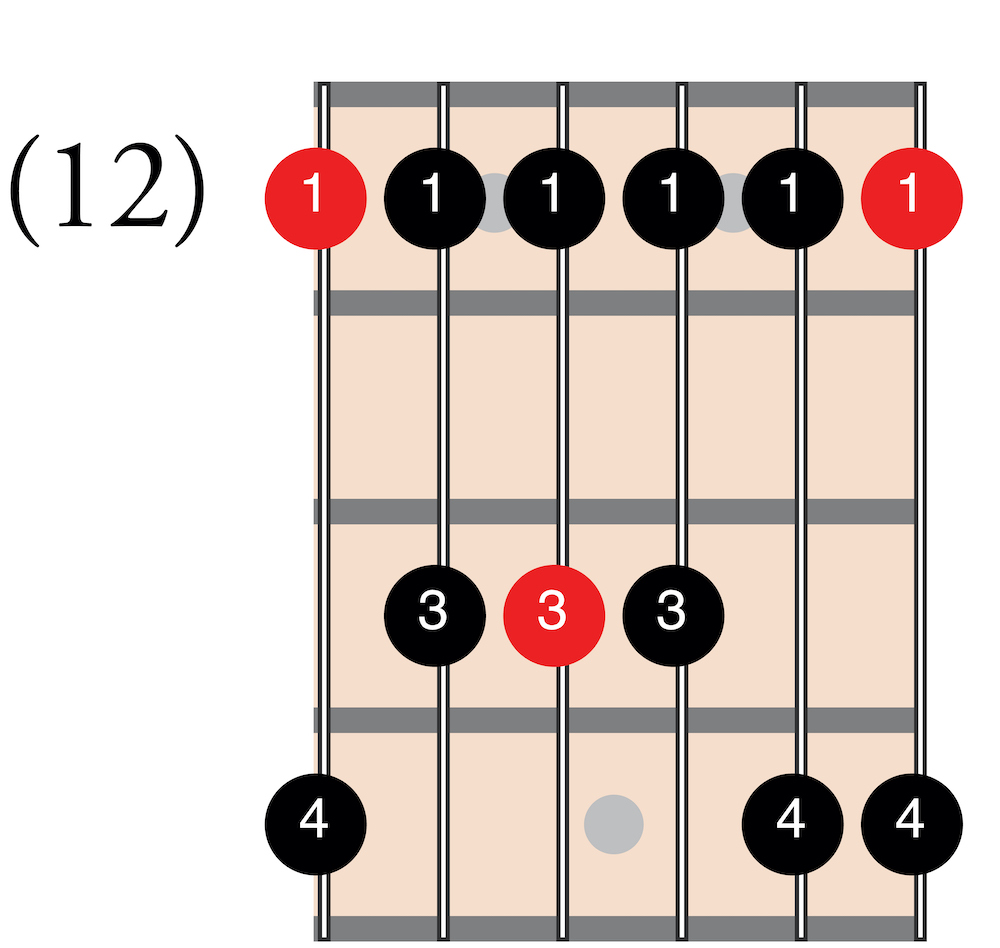

Pentatonic scales are one of the most commonly used scales for soloing. Break down the word pentatonic and you get penta (five) and tonic (tones/notes). Technically speaking, any five-note scale is a pentatonic scale. The pentatonic scale we will focus on is called the minor pentatonic scale. In Part 3 you will learn the theory behind this scale and how to play it in all positions.
The first pentatonic scale to learn is A minor pentatonic. Start with your first finger on A at the sixth-string fifth-fret using the one-finger-per-fret rule. Practice ascending and descending, then try mixing up the notes to solo on an A blues.
Start with your first finger on E at the sixth-string twelfth-fret using the one-finger-per-fret rule. This is the same fingering as the A-minor pentatonic scale you have already learned. E minor pentatonic can also be played in the open position. Practice ascending and descending in each position, then try mixing up the notes to solo on an E blues.
